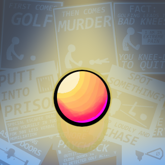

Parole in One OST
This is the soundtrack I designed for the INFO 3152: Introduction to Computer Game Design course at Cornell. The central feature of the soundtrack was the ability to switch between "stealth" and "chase" themes seamlessly when a player is either evading detection or being spotted or chased. The soundtrack was produced with LMMS, using recorded samples and the built-in zynaddsubfx plugin.
